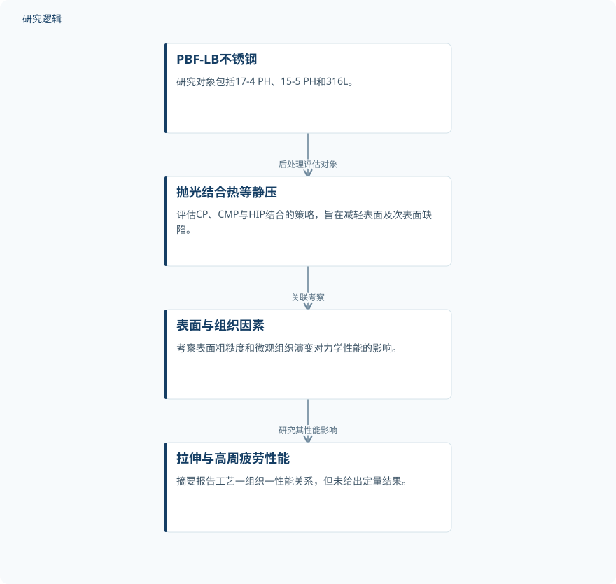

摘要解读
化学及化学机械抛光联合热等静压改善激光粉末床熔融不锈钢的力学性能
Surface Finishing Of PBF-LB Stainless Steels Using Chemical And Chemical-Mechanical Polishing In Combination With Hot Isostatic Pressing (HIP) For Improved Mechanical Performance
解读更新 2026-11-10 13:51 · 依据公开摘要整理，未核验全文细节
金属增材制造能实现复杂几何，但表面与近表面缺陷仍可能限制疲劳寿命和构件鉴定。这项研究将抛光与热等静压结合，关注不锈钢后处理如何关联表面状态、组织变化与力学性能，为理解疲劳可靠性的工艺基础提供线索。
文章目录
复杂构件成形后，表面缺陷仍是可靠性关口
摘要指出，粉末加工带来的表面与近表面缺陷会限制金属增材制造构件的力学性能和鉴定。部分熔合颗粒、近表面孔隙等特征会显著降低疲劳寿命，进而制约其在高可靠性场景中的应用。
因此，研究关注的不只是表面是否光滑，而是表面质量改善能否与结构可靠性建立联系。化学抛光与化学机械抛光被作为改善表面质量的可行途径，并与热等静压共同纳入评估。
联合评估抛光与热等静压，观察组织和性能
研究对象为激光束粉末床熔融（PBF-LB）制备的17-4 PH、15-5 PH和316L不锈钢。作者评估化学抛光（CP）、化学机械抛光（CMP）与热等静压（HIP）结合的策略，目标是减轻表面及次表面缺陷。
性能考察涉及拉伸性能与高周疲劳表现，同时研究表面粗糙度和微观组织演变的影响。摘要没有交代各处理的先后顺序、具体参数或分组细节，因此不能据此还原完整工艺流程。
依据摘要整理的后处理评估关系


概括研究对象、联合后处理与性能考察的关系，不表示抛光和热等静压的具体执行顺序，也不是论文原图。
下载 SVG图示关系说明
实线表示相邻阶段的信息流，虚线表示跨阶段联系或反馈。
PBF-LB不锈钢 → 抛光结合热等静压：后处理评估对象；抛光结合热等静压 → 表面与组织因素：关联考察；表面与组织因素 → 拉伸与高周疲劳性能：研究其性能影响
摘要报告了工艺—组织—性能之间的关联
摘要报告，研究揭示了清晰的工艺—组织—性能关系，将粉末加工形成的表面状态、后处理策略与力学性能联系起来。这是当前资料能够确认的核心发现，但尚不足以说明哪种处理组合表现最佳。
作者认为，这些发现为增材制造不锈钢构件建立稳健、面向鉴定的后处理路线提供支持。这里应区分“支持路线开发”与“已经完成构件鉴定”，摘要并未报告后者。
缺少定量结果，暂不能比较工艺优劣
本次依据仅为完整摘要，未提供可用论文原图。摘要未报告试样数量、重复次数、粗糙度数值、拉伸指标或疲劳寿命数据，也未说明比较基线与统计不确定性，因而无法判断改善幅度和结果稳定性。
不同钢种是否具有一致响应、疲劳测试采用何种载荷条件，以及结论能否推广到复杂构件，均需进一步阅读原文确认。这些属于摘要无法判断的验证范围，不意味着论文没有开展相关工作。
阅读启发：追问表面改善如何对应疲劳表现
阅读启发：后续阅读可重点关注，作者如何区分表面粗糙度变化与微观组织演变对性能的影响，以及拉伸性能和高周疲劳表现是否呈现一致趋势。这些问题直接关系到后处理路线的可靠性解释，而当前摘要尚不能给出答案。
以上为本站阅读启发与建议，不是论文已验证的结论。